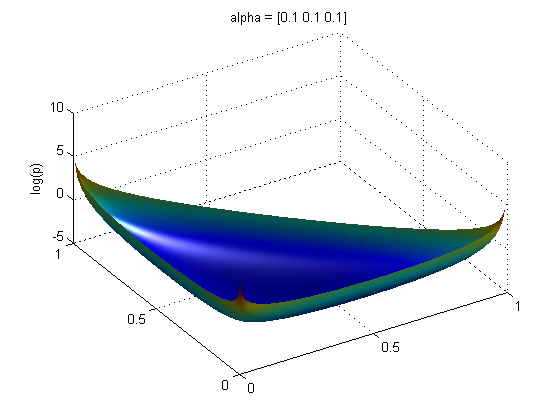

Plot a Dirichlet distribution
Contents
alpha = [10 10 10]
xyrange = [0 1 0 1]; model.alpha = 10; npoints = 200; figure(); plotSurface(@(X)exp(dirichletLogprob(model, X)), xyrange, 'npoints', npoints); shading interp; camlight right; lighting phong; set(gca, 'xtick', 0:0.5:1, 'ytick', 0:0.5:1); zlabel('p'); title('alpha = [10 10 10]'); printPmtkFigure alpha10;

alpha = [0.1 0.1 0.1]
Here we plot the log probability - plots of exp(p) when alpha < 1 are ugly due to numerical error, but for alpha = 0.1, the plots of p and logp look almost identical.
model.alpha = 0.1; npoints = 500; % We need a higher resolution when alpha < 1 figure(); plotSurface(@(X)dirichletLogprob(model, X), xyrange, 'npoints', npoints); view([-32 50]); shading interp; camlight right; lighting phong; set(gca, 'xtick', 0:0.5:1, 'ytick', 0:0.5:1); zlabel('log(p)'); title('alpha = [0.1 0.1 0.1]'); printPmtkFigure alpha0-1;